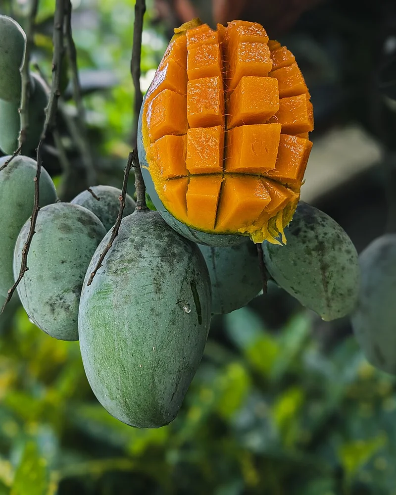
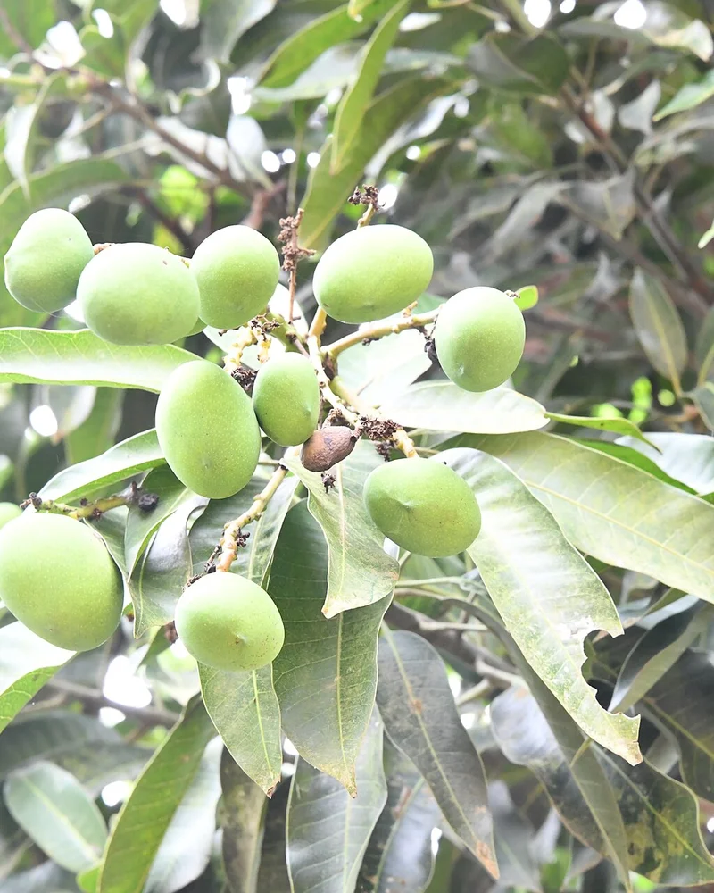
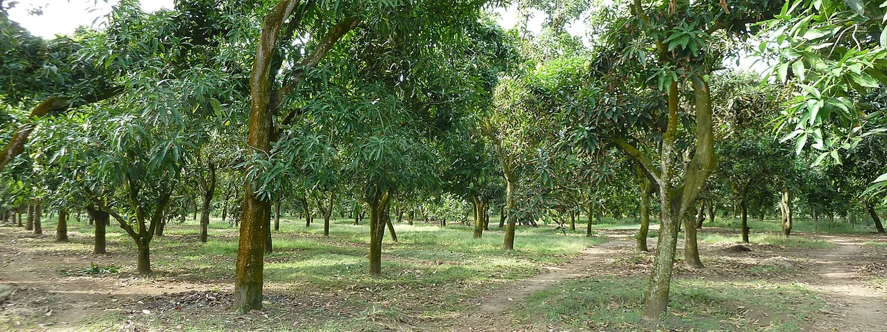

Harum Manis
Musim: Sep - Des
Mangga pilihan dari kebun tropis Nusantara, dirawat alami dan dipanen matang pohon untuk aroma khas serta rasa manis optimal.
Unduh Daftar HargaSetiap varietas memiliki karakter aroma dan tekstur istimewa, dipetik pada tingkat kematangan optimal untuk pelanggan Anda.





Kami menjaga keaslian rasa dan kesegaran sejak bibit unggul ditanam, dipelihara dengan pupuk organik, hingga tiba di meja makan Anda.


Harum Manisnya luar biasa manis dan legit. Daging buah tebal tanpa serat kasar, kemasan boks tebal aman sampai di rumah tanpa memar.
Pesan Gedong Gincu untuk hampers keluarga. Wanginya semerbak segar begitu dibuka, tingkat kematangan pas matang pohon.
Pengiriman cepat dan buahnya benar-benar pilihan. Rasanya konsisten manis segar dari buah pertama sampai buah terakhir di keranjang.